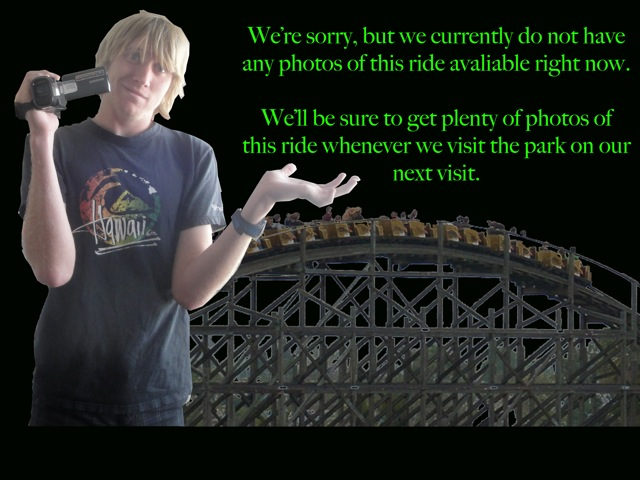

| |
Revolution Photos

We're here at SunSplash, where we'll be reveiwing Revolution. The most standard of the bowl slides, as yeah. They have three of them here. So basically, you grab your tube, head up the stairs. Considering how this slide always has a long wait, you're gonna be waiting for a while. You grab your tube, plop it in the water, then when its clear, the worker pushes you down into the drop. The drop is fun. but it's not that much. It's mostly just to speed you up. There's no weird stomach feeling or anything. Once you make it to the bowl, you take a couple rides around the bowl. Then you go down a little bonus drop and hit a water curtain. And if you're really unlucky, you may just have to push yourself out of the bowl. And then PLOP!!! Into the lazy river you go. I would recommend riding this if it has a short line or have never been on a Toilet Bowl. But then again, this park has freaking Vortex, a true body bowl with a real helix of death. So yeah. This is mainly if you just love Bowl Slides. Fun, but there's so much better.
7/10
Location: Golfland Sunsplash (Roseville)
Opened: 2012
Built by: ProSlide
Last Ridden: June 22, 2017
I have ridden this exact same ride at the following waterparks.
Cowabunga Bay (Las Vegas)
Raging Waters (San Dimas)
Home
|